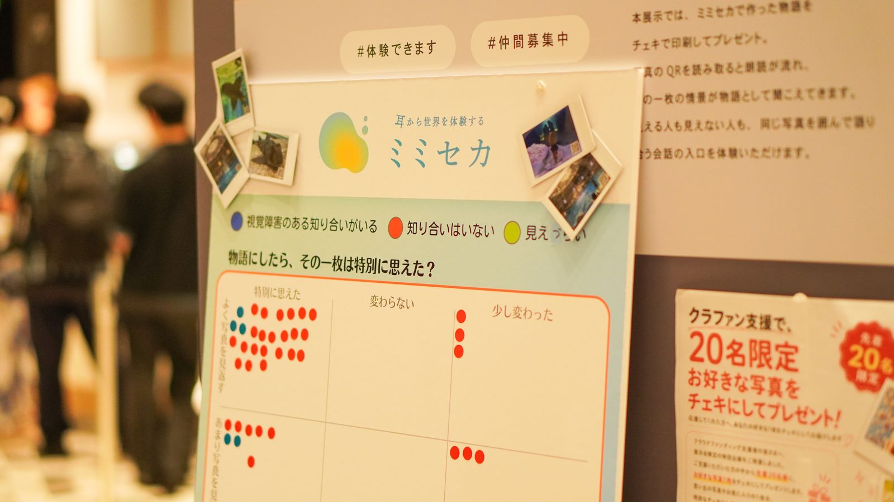

拠点

渋谷スクランブルスクエアの中にある共創施設、SHIBUYA QWS を拠点に活動しています。問いから始めて、社会に新しい価値を生む——その理念のもとで走る「QWS チャレンジ」に採択されたプロジェクトのひとつです。
QWS の展示イベント「CROSS STAGE」には、2026 年 4 月と 7 月に出展しました。来場者の一言——「説明の描写がよくなっているだけで、物語じゃないよね」——が、写真と話す機能の出発点になりました。
はじまり
きっかけは、QWS で視覚に障害のある方と、じっくり話す機会が何度かあったことでした。生活の中の不便さを伺う一方で、こんな言葉を聞きました。「見ているものを言葉で伝えてもらえるだけで、日常はとても楽になる」。
ただ見えているものを説明するのではなく、物語として伝えられたら。それは体験を残す、新しい方法になるのではないか。写真を見て楽しむ体験を、見える人だけのものにしなくていい。——そこから、ミミセカが始まりました。
取材・協業・展示のご相談は、お問い合わせから。